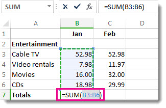
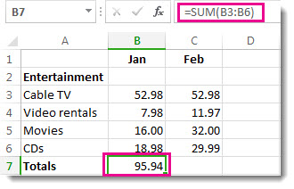

You can create a simple formula to add, subtract, multiply or divide values in your worksheet. Simple formulas always start with an equal sign (=), followed by constants that are numeric values and calculation operators such as plus (+), minus (-), asterisk(*), or forward slash (/) signs.
Let's take an example of a simple formula.
On the worksheet, click the cell in which you want to enter the formula.
Type the = (equal sign) followed by the constants and operators (up to 8192 characters) that you want to use in the calculation.
For our example, type =1+1.
Notes:
Instead of typing the constants into your formula, you can select the cells that contain the values that you want to use and enter the operators in between selecting cells.
Following the standard order of mathematical operations, multiplication and division is performed before addition and subtraction.
Press Enter (Windows) or Return (Mac).
Let's take another variation of a simple formula. Type =5+2*3 in another cell and press Enter or Return. Excel multiplies the last two numbers and adds the first number to the result.
You can use AutoSum to quickly sum a column or row or numbers. Select a cell next to the numbers you want to sum, click AutoSum on the Home tab, press Enter (Windows) or Return (Mac), and that's it!
When you click AutoSum, Excel automatically enters a formula (that uses the SUM Function) to sum the numbers.
Note: You can also type ALT+= (Windows) or ALT+ += (Mac) into a cell, and Excel automatically inserts the SUM function.
Here’s an example. To add the January numbers in this Entertainment budget, select cell B7, the cell immediately below the column of numbers. Then click AutoSum. A formula appears in cell B7, and Excel highlights the cells you’re totaling.

Press Enter to display the result (95.94) in cell B7. You can also see the formula in the formula bar at the top of the Excel window.

Notes:
To sum a column of numbers, select the cell immediately below the last number in the column. To sum a row of numbers, select the cell immediately to the right.
Once you create a formula, you can copy it to other cells instead of typing it over and over. For example, if you copy the formula in cell B7 to cell C7, the formula in C7 automatically adjusts to the new location, and calculates the numbers in C3:C6.
You can also use AutoSum on more than one cell at a time. For example, you could highlight both cell B7 and C7, click AutoSum, and total both columns at the same time.